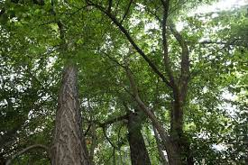
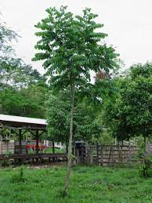
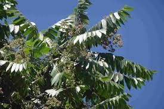
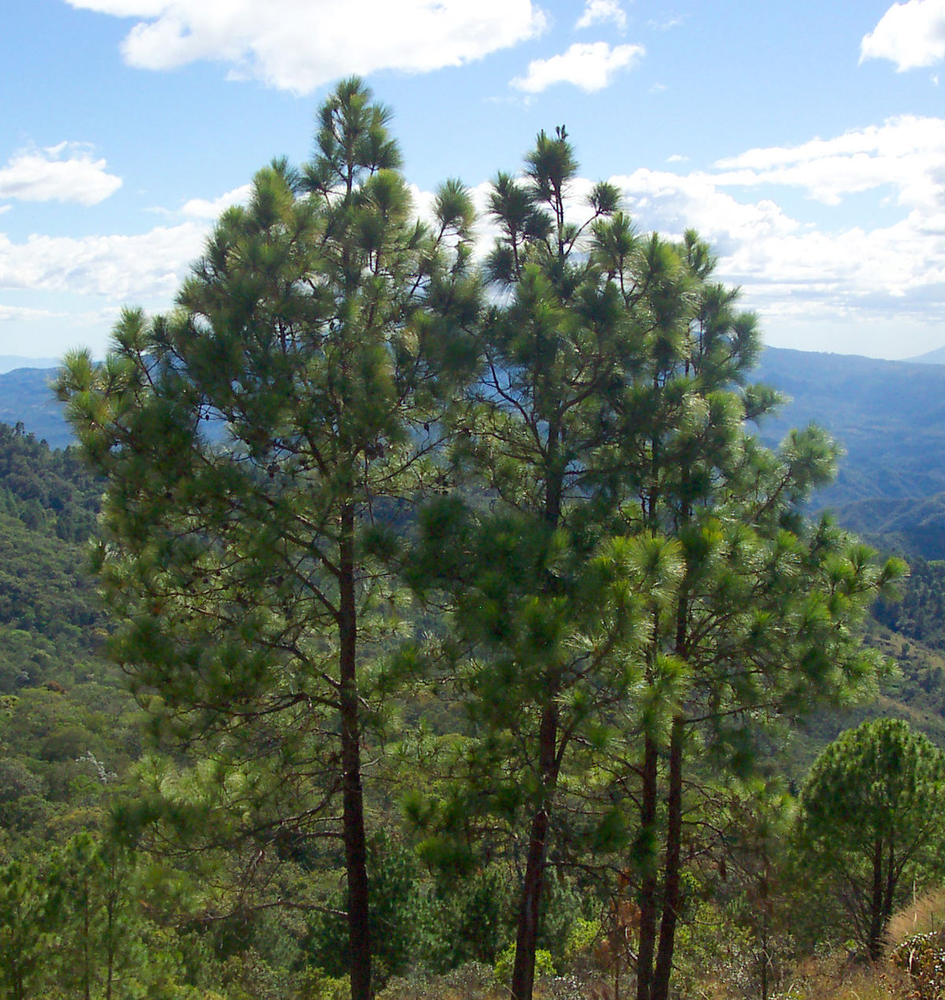
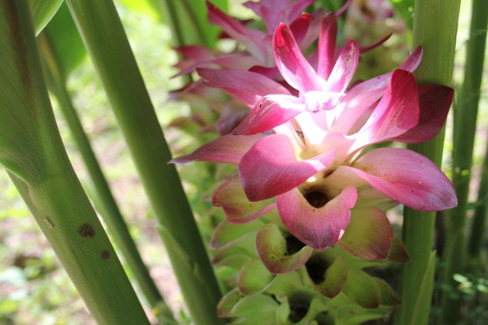
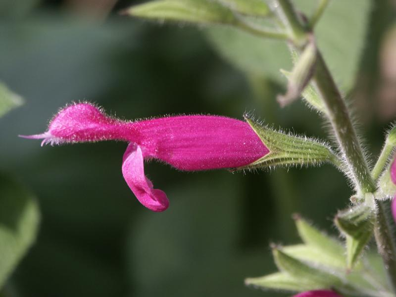
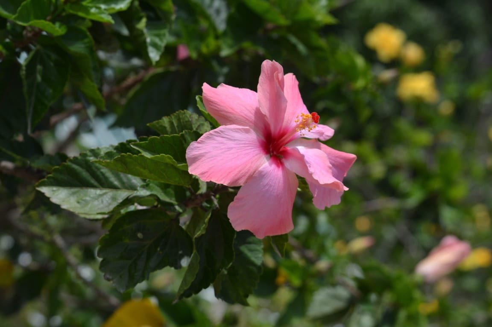
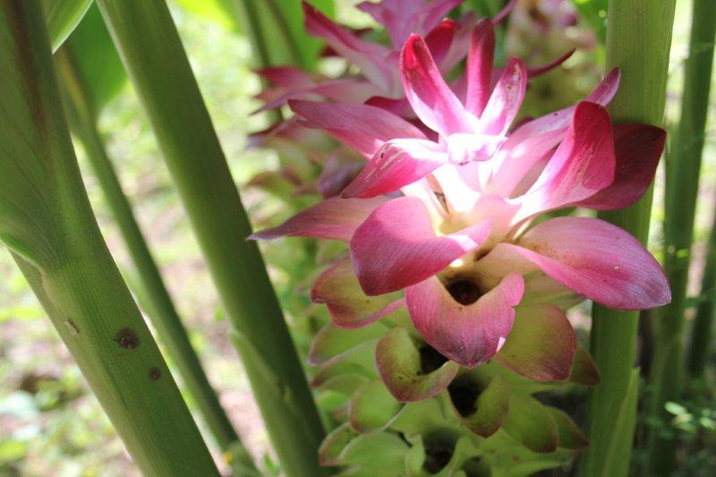
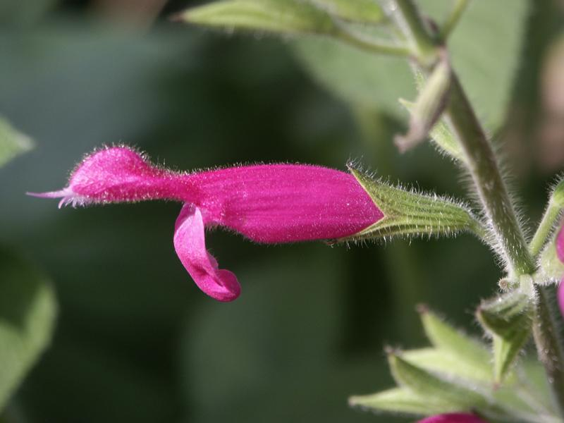
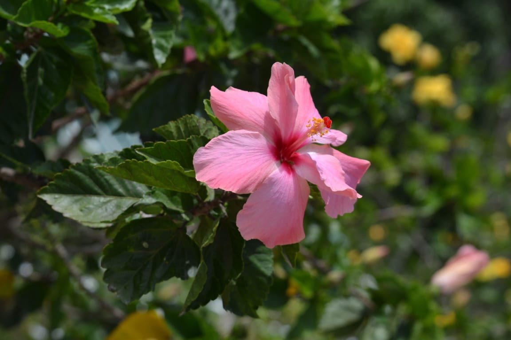

Ejemplos:
   
Flores: La flora de Honduras es muy variada, la selva lluviosa o pluvioselva, también clasificado como Bosque lluvioso Tropical, es uno de las más impresionantes como formación vegetal; los ecólogos la denominan "Formación Higrófila Megatérmica", por corresponder a regiones de gran humedad y constantes temperaturas altas. En los cuales hay una especie dominante única, como pinos o abetos, cubriendo grandes áreas.
 




